6.5 Exercises
The section contain several exercises covering:
- Decomposing and forecasting without cycles
- Decomposing and forecasting with cycles
- Time Series regression with other variables
- Fitting trend variable
- Decomposing using OLS, decompose and CMA
6.5.1 Decomposition + Forecast Exercise
We use the Alomega Foodstore sales data to show the following:
- How to make a decomposition of a time series, using
decompose() - How to use
decompose()to retrieve the different components and store these - How to inteprete the components
- How to forecast using the components
y <- read_excel("Data/Week47/Alomegafoodstores.xlsx")
y <- y$Sales
y <- ts(data = y #The data
,frequency = 12 #Data is monthly
,end = c(2006,12)
)
options(scipen = 999)
tsdisplay(y)
It appears as if we have seasonality, but a trend is dificult to say.
It appears as if the data is additive, as the variance appear to be more or less the same over time.
6.5.1.1 a. Decomposing the time series
Now we can decompose the elements using decompose(), where moving averages are applied to deseasonalize the data.
But just for the sake of it, the multuplicative decomposition is made as well.
y.decom.add <- decompose(x = y #The ts
,type = "additive" #The composition
)
y.decom.mult <- decompose(x = y #The ts
,type = "multiplicative" #The composition
)
plot(y.decom.add)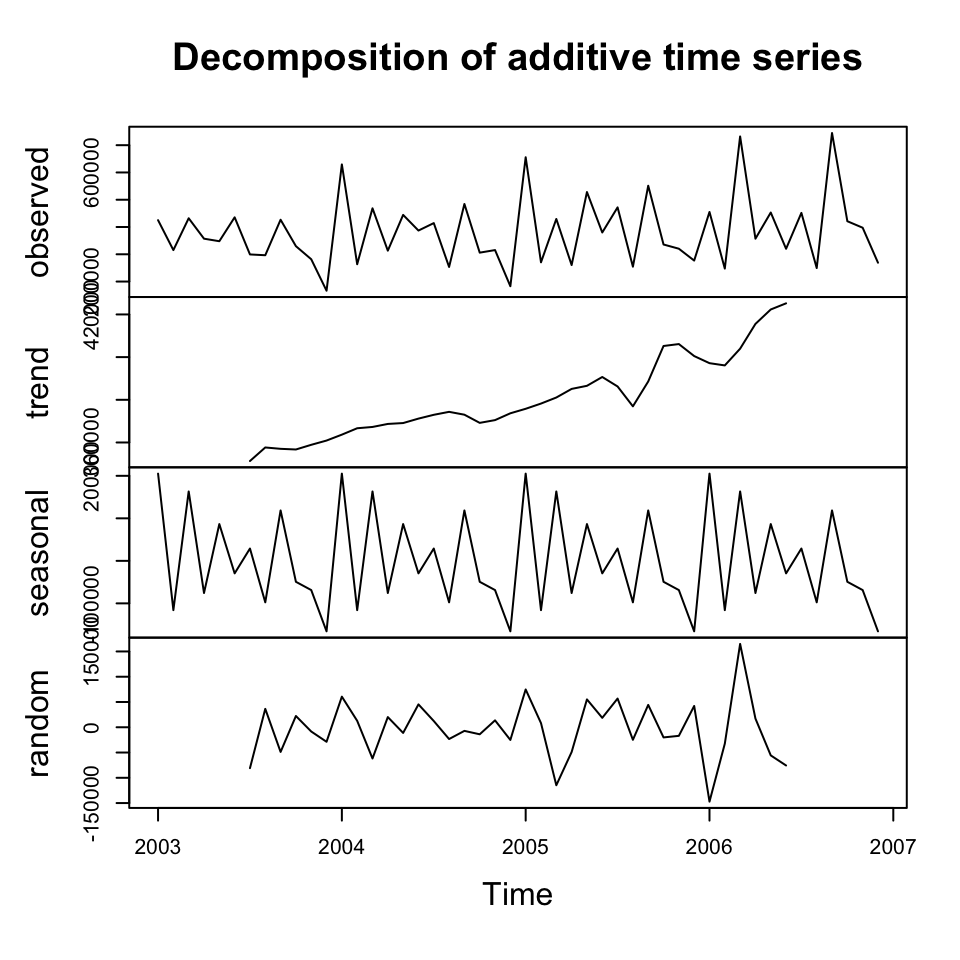
6.5.1.2 b. Retrieving components
Recall that we have the following components:
- Trend (T), Tr in this example, as T is used for TRUE statement
- Seasons(S)
- Irregular(I) - NOTICE: We don’t want to use this for forecasting, as it is random, hence it can be left out from the assembly yhat
We see no cycles, and assume that they are not there.
Tr <- y.decom.add$trend
S <- y.decom.add$seasonal
I <- y.decom.add$random6.5.1.3 c. Interpreting the resutls
For the sake of it, the additive and multiplicative decompositions are plotted.
plot(y.decom.add)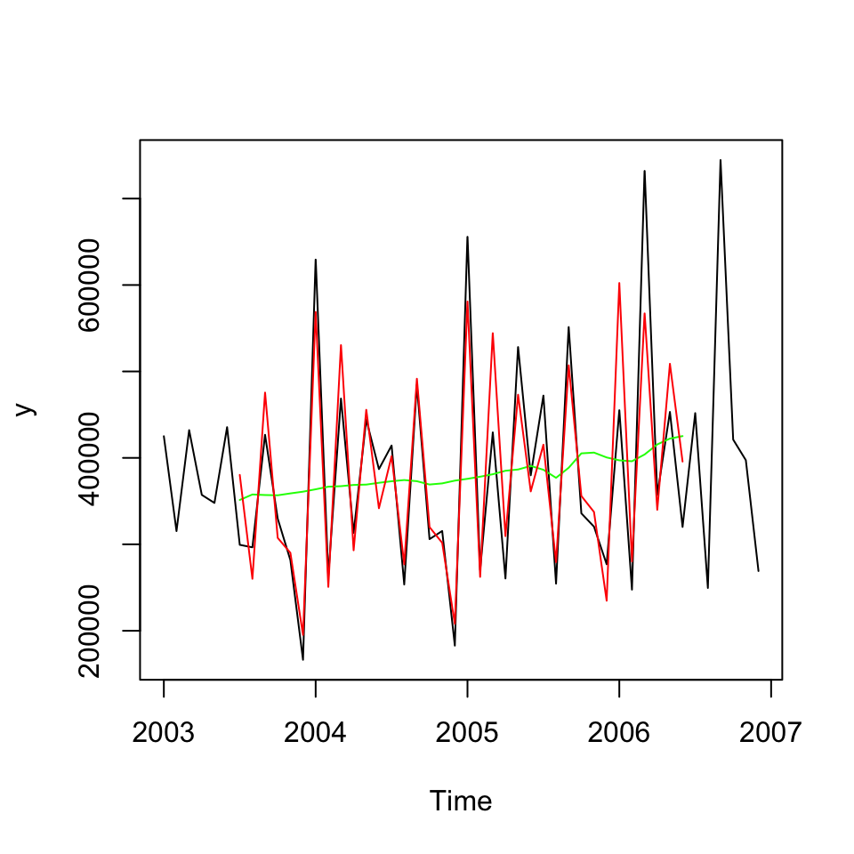
plot(y.decom.mult)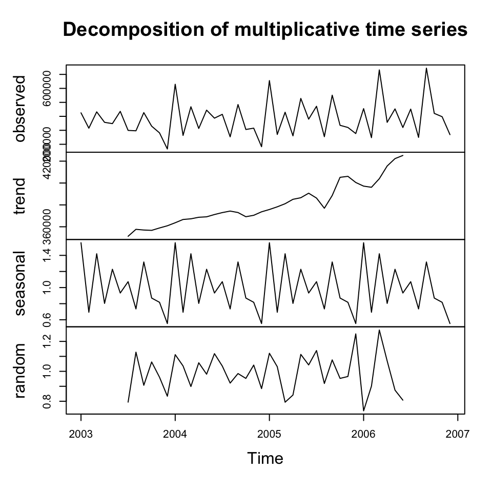
We see that the decomposition finds a trend and also it appears as there are some reoccurring patterns in the seasons.
But notice that the seasonal component is different, now it is a factor, which is relative to the trend.
6.5.1.4 d. Forecasting using the components
6.5.1.4.1 Fitting the model
We see that we are able to construct the in sample data 1:1 if the composition is created with all three components.
Let us forecast only using the trend and season component.
We see that we area able to plot the following:
yhat<-Tr+S #Notice, that I is left out, as it is a random component
plot(y, type="l") + lines(Tr,col="green") + lines(yhat,col="red")## integer(0)We can assess the accuracy of the composition of the trend and seasons.
accuracy(yhat,y)## ME RMSE MAE MPE MAPE ACF1 Theil's U
## Test set -3913.472 56659.88 43104.6 -2.781556 11.18807 -0.09662767 0.2250085We see that the mean percentage error is -2,78 percent, hence it appears as there is a tendency for the model to be underestimating y.
6.5.1.4.2 Forecasting using the composition
Now we can apply the model in a forecasting setting to forecast h horizons.
forecast.decom.add <- forecast(object = yhat,h = 18)
t(t(forecast.decom.add$mean))## [,1]
## [1,] 446496.7
## [2,] 320351.2
## [3,] 541732.4
## [4,] 380127.7
## [5,] 361224.6
## [6,] 262271.3
## [7,] 635257.0
## [8,] 317322.8
## [9,] 598609.9
## [10,] 362402.8
## [11,] 526939.7
## [12,] 414048.1
## [13,] 464803.6
## [14,] 338658.2
## [15,] 560039.4
## [16,] 398434.7
## [17,] 379531.6
## [18,] 280578.318 months are chosen, as the function forecast from the middle of 2006, where it is was not able to fit the components, as it applies CMA on the months.
Using 18 months, we get forecasts for the last half a year and there after a whole year
We can also plot the forecast
plot(forecast.decom.add)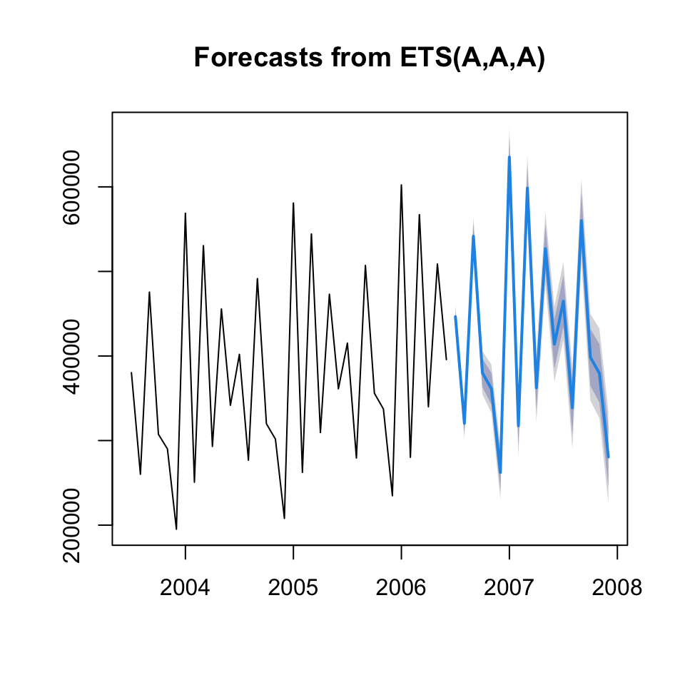
We can assess the accuracy of the first 6 forecasted periods, as they are known
y.test <- y[(length(y)-5):length(y)]
accuracy(object = forecast.decom.add$mean[1:6],x = y.test)## ME RMSE MAE MPE MAPE
## Test set 36881.52 90588.21 60504.58 3.564348 13.03319We see that the accuracy of these periods are 3.56% (MPE).
rm(list = ls())6.5.2 Decomposition with cycles + Forecasting
Process:
- Finding CMA (deseasonalizing)
- Finding SF
- Identifying Trend
- Finding detrended and deseasonalized data
- Cycle identifying factor
y <- read_excel("Data/Week47/Alomegafoodstores.xlsx")
y <- y$Sales
y <- ts(data = y #The data
,frequency = 12 #Data is monthly
,end = c(2006,12)
)6.5.2.1 1. Finding CMA (deseasonalizing)
CMA <- ma(x = y #The data
,order = 12 #When the same period occurs
,centre = TRUE) #As we have an even periodWe have now deseasonalized the data, as the moving average has removed the effect of the seasons.
6.5.2.2 2. Finding SF
That is, identifying whether we are above or below the deseasonalized data.
SF<-y/CMA
plot(SF, type="l")
abline(h = 1 #Plotted, as when one is on 1, then you are neither above or below
,col = "red")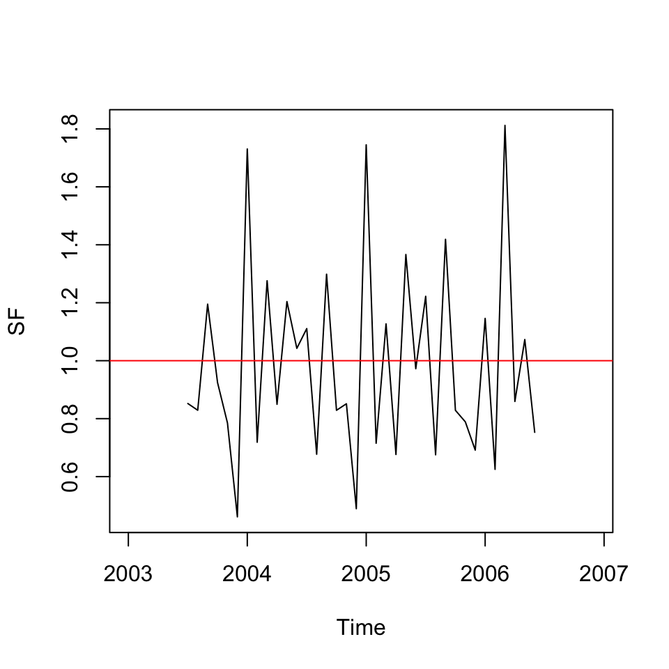
6.5.2.3 3. Identifying Trend
We introduce a trend variable to take out the effect of the trend
trend <- seq(1:length(y)) #Making counter
linmod <- lm(CMA ~ trend
,na.action = "na.exclude")Notice that we don’t care about the model, we just need the fitted values for identifying the cycle factor.
6.5.2.4 4. Finding detrended and deseasonalized data
In step 1 we deseasonalized the data, based on the fitted model, we have detrended the
CMAT <- linmod$fitted.values6.5.2.5 5. Cycle identifying factor
We the deseasonalized and detrended data, we are able to idenitify if the deseasonalized data is above or below the seasons.
CF <- na.exclude(CMA) / CMAT
ts.plot(CF)
abline(h = 1,col = "red")Figure 6.1: Cycle Factor
We want to look for wavelike patterns. We don’t see any, hence it is fair to assume, that we don’t have any cycles.
If we had, what to do?
- When multiplicative: One can apply the cycle factor in the regression
- When additive: One can apply the difference (between CMA and CMAT) in the regression.
End of exercise:
rm(list = ls())6.5.3 Time series regression
This example show how one can apply other variables in a regression
Alomegasales <- read_excel("Data/Week47/Alomegafoodstores.xlsx")
y <- read_excel("Data/Week47/Alomegafoodstores.xlsx")
y <- y$Sales
y <- ts(data = y #The data
,frequency = 12 #Data is monthly
,end = c(2006,12)
)
#fetch explanatory variables
paper<-ts(Alomegasales$Paper, frequency=12)
tv<-ts(Alomegasales$TV, frequency=12)
month <- seasonaldummy(y) #creates seasonal dummies, if such not available in the data
#Regression model for sales
reg <-lm(y~paper+tv+month)
summary(reg)##
## Call:
## lm(formula = y ~ paper + tv + month)
##
## Residuals:
## Min 1Q Median 3Q Max
## -88551 -23745 -951 21590 107195
##
## Coefficients:
## Estimate Std. Error t value Pr(>|t|)
## (Intercept) 184393.15345 23401.84900 7.879 0.000000003560 ***
## paper 0.36319 0.06854 5.299 0.000007029523 ***
## tv 0.31530 0.03638 8.667 0.000000000398 ***
## monthJan 200847.13731 39150.70001 5.130 0.000011646830 ***
## monthFeb 55491.47382 32399.34749 1.713 0.095868 .
## monthMar 199556.46868 34147.06238 5.844 0.000001372948 ***
## monthApr 100151.42985 32387.77669 3.092 0.003952 **
## monthMay 190293.03783 32822.15893 5.798 0.000001577161 ***
## monthJun 135441.04479 32580.72319 4.157 0.000206 ***
## monthJul 156608.64859 32699.04733 4.789 0.000032157745 ***
## monthAug 51585.64542 32419.67959 1.591 0.120825
## monthSep 183619.40275 36521.78560 5.028 0.000015816441 ***
## monthOct 109096.18894 32438.67351 3.363 0.001919 **
## monthNov 96205.98997 32416.66110 2.968 0.005461 **
## ---
## Signif. codes: 0 '***' 0.001 '**' 0.01 '*' 0.05 '.' 0.1 ' ' 1
##
## Residual standard error: 45800 on 34 degrees of freedom
## Multiple R-squared: 0.9083, Adjusted R-squared: 0.8732
## F-statistic: 25.9 on 13 and 34 DF, p-value: 0.00000000000007305We see the model summary above. Now we can make the regression
#obtain residuals from the model to perform model quality checks
res<-reg$residuals
plot(res)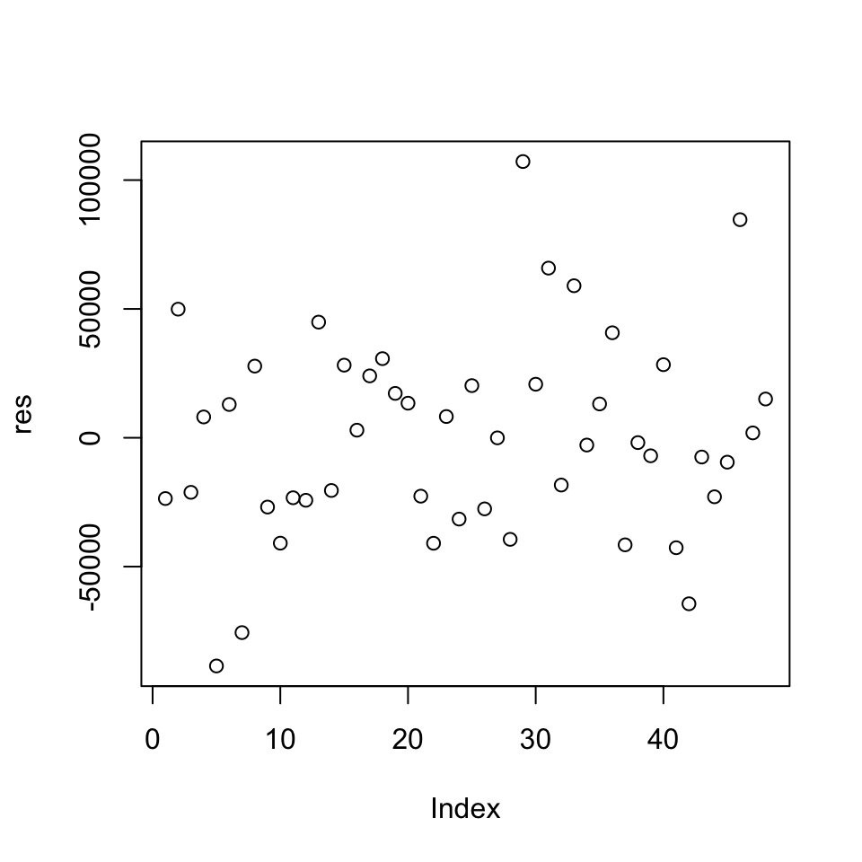
We see that the residuals appear homoskedastic.
We can check them for normality
#check for normality
hist(res)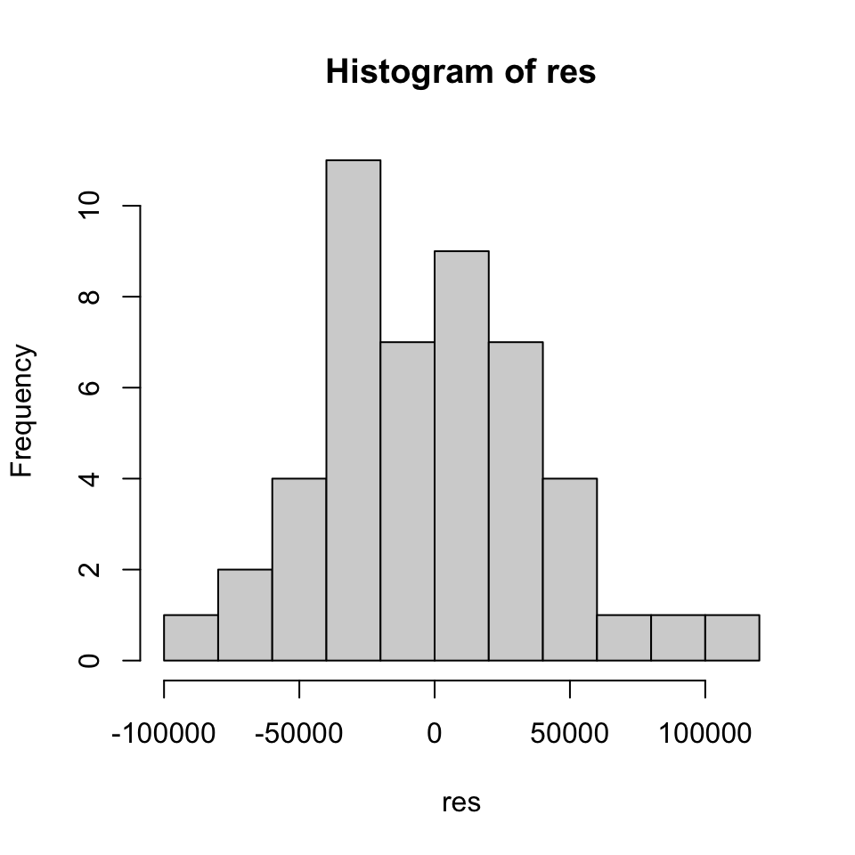
By visual inspection, they appear to be normally distributed.
library(tseries)
jarque.bera.test(res) #Jarque-Bera test the null of normality##
## Jarque Bera Test
##
## data: res
## X-squared = 1.0947, df = 2, p-value = 0.5785H0: Normality
Cannot reject.
Now we can check for multicollinearity
#testing for multicollinearity
library(car)
vif(reg)## GVIF Df GVIF^(1/(2*Df))
## paper 2.054002 1 1.433179
## tv 1.559810 1 1.248924
## month 2.581443 11 1.044049We see that they are all ≈ 2 or less, hence no problem
We can check the residuals for autocorrelation (serial correlation). We dont want this
#serial correlation
#acf(res)
plot(acf(res,plot=F)[1:20])#alternative command if you want to skip the 0 lag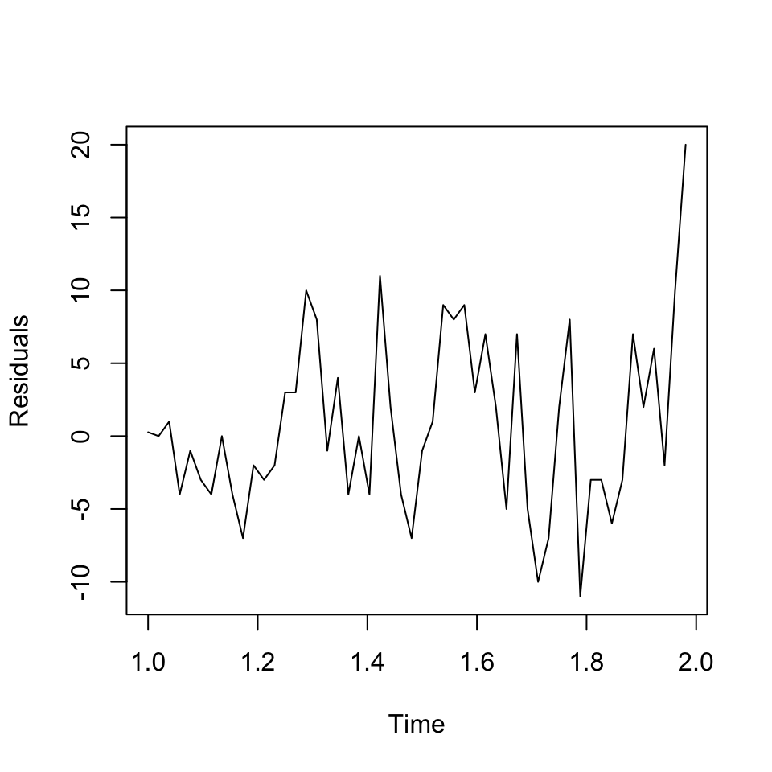
Despite a few significant spikes, it appears as if it is not autocorrelated. This can be tested with the Durbin Watson test.
#Durbin-Watson serial correlation test
library(lmtest)
dwtest(reg)##
## Durbin-Watson test
##
## data: reg
## DW = 2.2742, p-value = 0.8231
## alternative hypothesis: true autocorrelation is greater than 0H0: No autocorrelation
We cannot reject on the five percent level
rm(list = ls())
6.5.4 Alomega Food Stores, case 6 p. 166 + case 7 p. 348 (Another example)
y <- read_excel("Data/Week47/Alomegafoodstores.xlsx")
str(y)## tibble [48 × 21] (S3: tbl_df/tbl/data.frame)
## $ Sales : num [1:48] 425075 315305 432101 357191 347874 ...
## $ Paper : num [1:48] 75253 15036 134440 119740 135590 ...
## $ TV : num [1:48] 114433 63599 64988 66842 39626 ...
## $ Month : num [1:48] 1 2 3 4 5 6 7 8 9 10 ...
## $ Dum1 : num [1:48] 1 0 0 0 0 0 0 0 0 0 ...
## $ Dum2 : num [1:48] 0 1 0 0 0 0 0 0 0 0 ...
## $ Dum3 : num [1:48] 0 0 1 0 0 0 0 0 0 0 ...
## $ Dum4 : num [1:48] 0 0 0 1 0 0 0 0 0 0 ...
## $ Dum5 : num [1:48] 0 0 0 0 1 0 0 0 0 0 ...
## $ Dum6 : num [1:48] 0 0 0 0 0 1 0 0 0 0 ...
## $ Dum7 : num [1:48] 0 0 0 0 0 0 1 0 0 0 ...
## $ Dum8 : num [1:48] 0 0 0 0 0 0 0 1 0 0 ...
## $ Dum9 : num [1:48] 0 0 0 0 0 0 0 0 1 0 ...
## $ Dum10 : num [1:48] 0 0 0 0 0 0 0 0 0 1 ...
## $ Dum11 : num [1:48] 0 0 0 0 0 0 0 0 0 0 ...
## $ Paper1: num [1:48] 220 75253 15036 134440 119740 ...
## $ Paper2: num [1:48] 5 220 75253 15036 134440 ...
## $ TV1 : num [1:48] 88218 114433 63599 64988 66842 ...
## $ TV2 : num [1:48] 76001 88218 114423 63599 64988 ...
## $ M01-48: num [1:48] 1 2 3 4 5 6 7 8 9 10 ...
## $ Compet: num [1:48] 1 2 2 1 2 3 3 2 3 3 ...We see that there are 21 variables, where sales is the DV and all others are IDVs, consisting of continous and factors.
Now we are interested in constructing a time series, which consist of the dependent variable. That is done in the following:
y <- ts(data = y$Sales #The dependent variable
,end = c(2006,12) #The end date
,frequency = 12 #The frequency, 12 as we are working with months
)
options(scipen = 999)
plot(y)Figure 6.2: Time series Alomega Food
Now we want to address if there is:
- Trend: visually it does not look like. But it will be tested by testing the time series against a trend variable
- Seasons:
- Cycles: THis is difficult to say, also as we only have data for four years
Trend
#Creating trend variable
trend <- seq(from = 1,to = length(y),by = 1)
#Creating a linear model with the trend variable
lm.fit <- lm(y ~ trend)
summary(lm.fit)##
## Call:
## lm(formula = y ~ trend)
##
## Residuals:
## Min 1Q Median 3Q Max
## -200465 -84502 -13613 71381 333683
##
## Coefficients:
## Estimate Std. Error t value Pr(>|t|)
## (Intercept) 350840 37726 9.300 0.00000000000389 ***
## trend 1335 1340 0.996 0.325
## ---
## Signif. codes: 0 '***' 0.001 '**' 0.01 '*' 0.05 '.' 0.1 ' ' 1
##
## Residual standard error: 128600 on 46 degrees of freedom
## Multiple R-squared: 0.0211, Adjusted R-squared: -0.0001811
## F-statistic: 0.9915 on 1 and 46 DF, p-value: 0.3246We see that the trend variable appear to be non significant, hence there is not enough evidence to reject the null hypothesis, being that there is no relationship between the dependent- and independent variable.
accuracy(object = lm.fit #The fitted values from the linear model
,y = y #The actual value
)## ME RMSE MAE MPE MAPE MASE
## Training set -0.000000000002425023 125940.3 99341.6 -10.69473 28.49834 0.992719We see the RMSE of 125.940, this can also be plotted to see the fitted values against the residuals, where the mean absolute error is just below 100.000 units. Notice, that this test in done in sample.
plot(x = lm.fit$fitted.values,y = lm.fit$residuals,main = "Resduals plot") +
grid(col = "lightgrey") +
abline(h = 0,lty = 3,col = "blue")Figure 6.3: Residuals plot
## integer(0)6.5.4.1 What might Jackson Tilson say about the forecasts?
With mean average percentage error of 28%, the forecast may not be super good. Although it was shown, that there is statistical evidence for the model being significant. Hence, we must try to convince him, that it does in fact contribute with some knowledge.
What other forecast methods could be used?
E.g., smoothing or moving averages.
6.5.4.2 P.348 Case 7 (Alomega Food Stores)
This is an extension of the case above. It has questions regarding what other things she might do.
How is Julie sure that it is the right predictors
We see on page 348, that some of the variables has a p-vale that is above the 5 percent level, hence there is a greater risk, that there is no statistical evidence for a relationship between the individual variables and the dependent variable.
Also changes in VIF for the variables, although none are close to 10 and according to the rule of thumb, there is no indication of multicollinearity
How would you sell the model
Focus on how it prepares them for future changes, planning staffing, procurement, etc.
How may the model indicate future advertizing?
We see that it makes sense to spend money on all three types of advertisements.
What conditions to be aware of?
- Autocorrelation in the error terms?
- Multicollinearity
Other models that could be used?
- ARIMA
- Smoothing
rm(list = ls())6.5.5 Monthly Sales Data
Loading the data and storing only the y variable as a timeseries
df <- read_excel("Data/Week47/Salesdataseasonal.xlsx")
y <- ts(df$Sales
,frequency = 12 #Monthly data
,start = c(1979,1) #start year 1971 month 1
)
#Plotting for visual interpretation
plot(y)Figure 6.4: Visual interpretation
Goal:
- Seasonal dummies
- Trend variable
Hereafter different approaches to decomposing data is presented
- OLS using seasonal dummies and trend variable
- Decomposition using
decompose() - Using CMA (centered moving averages)
a. finding seasonal dummies
Finding seasonal dummies using a trend
#Creting matrix of dummies for each month
month <- seasonaldummy(x = y)This can be shown with the following table
| Jan | Feb | Mar | Apr | May | Jun | Jul | Aug | Sep | Oct | Nov |
|---|---|---|---|---|---|---|---|---|---|---|
| 1 | 0 | 0 | 0 | 0 | 0 | 0 | 0 | 0 | 0 | 0 |
| 0 | 1 | 0 | 0 | 0 | 0 | 0 | 0 | 0 | 0 | 0 |
| 0 | 0 | 1 | 0 | 0 | 0 | 0 | 0 | 0 | 0 | 0 |
| 0 | 0 | 0 | 1 | 0 | 0 | 0 | 0 | 0 | 0 | 0 |
| 0 | 0 | 0 | 0 | 1 | 0 | 0 | 0 | 0 | 0 | 0 |
| 0 | 0 | 0 | 0 | 0 | 1 | 0 | 0 | 0 | 0 | 0 |
We see that a matrix has been created identifying what month each period belongs to.
b. finding the trend variable
In addition hereof, we must create a trend variable to account for the trend:
trend <- seq(1,to = length(y),by = 1)1. OLS using seasonal dummies and trend variable
#Constructing linear model
lmmod <- lm(y ~ month + trend)
summary(lmmod)##
## Call:
## lm(formula = y ~ month + trend)
##
## Residuals:
## Min 1Q Median 3Q Max
## -41.782 -17.094 -3.591 15.140 91.349
##
## Coefficients:
## Estimate Std. Error t value Pr(>|t|)
## (Intercept) 84.01705 8.51294 9.869 < 0.0000000000000002 ***
## monthJan 5.78164 10.54471 0.548 0.5844
## monthFeb 42.89804 10.54352 4.069 0.00008250119327 ***
## monthMar 79.84777 10.54259 7.574 0.00000000000656 ***
## monthApr 76.88084 10.54192 7.293 0.00000000002882 ***
## monthMay 25.49724 10.54153 2.419 0.0170 *
## monthJun -13.05303 10.54139 -1.238 0.2179
## monthJul -49.51997 10.54153 -4.698 0.00000673141501 ***
## monthAug -23.23690 10.54192 -2.204 0.0293 *
## monthSep -17.94010 10.76929 -1.666 0.0982 .
## monthOct -28.56613 10.76864 -2.653 0.0090 **
## monthNov 5.80784 10.76825 0.539 0.5906
## trend 2.71693 0.05288 51.383 < 0.0000000000000002 ***
## ---
## Signif. codes: 0 '***' 0.001 '**' 0.01 '*' 0.05 '.' 0.1 ' ' 1
##
## Residual standard error: 25.25 on 127 degrees of freedom
## Multiple R-squared: 0.9586, Adjusted R-squared: 0.9547
## F-statistic: 245 on 12 and 127 DF, p-value: < 0.00000000000000022What can we deduct from this?
- January, June, September and November are not significant on the 5% level in the full model. Hence the dummies may not explain the sales for these months
- There is overwhelming evidence for trend being present in the data
Lets now look into the fitted values and plot
{#Plotting fitted values
plot(lmmod$fitted.values,main = 'Fitted values',ylab = 'Sales') +
lines(lmmod$fitted.values,col = 'red') +
grid(col = 'lightgrey')
#Plotting residuals
plot(lmmod$residuals,main = 'Residuals',ylab = 'Residuals') +
lines(lmmod$residuals,col = 'green') +
grid(col = 'lightgrey')}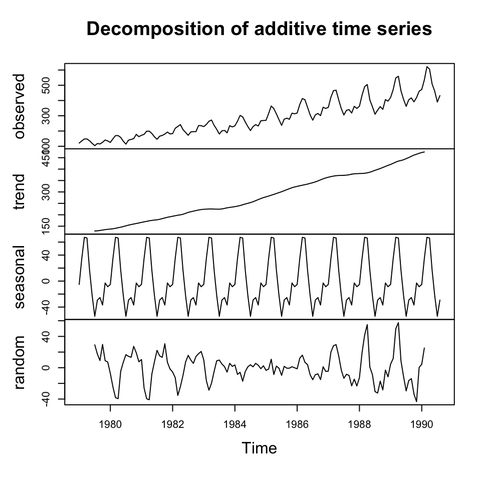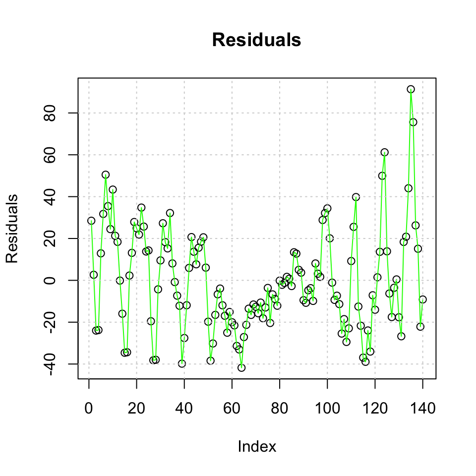
## integer(0)2. Decomposition using decompose()
The following is able to decompose the series based on assuming additivity and multiplicative relationship.
Although as we see that the variance is increasing over time, then one may expect that the multiplicative approach is more appropriate.
#Additive
decompSalesAdd <- decompose(x = y #The timeseries
,type = "additive") #for additive decomposition
#Plotting
plot(decompSalesAdd)Figure 6.5: Additive decomposition
#Multiplicative
decompSalesMult <- decompose(x = y #The timeseries
,type = "multiplicative") #for multiplicative decomposition
#Plotting
plot(decompSalesMult)3. CMA
see process in 6.4.2
- Find the MA_t with equation (6.1) and (6.2) = Deseasonalizing data
#Finding centered MA
CMA <- ma(x = y #The time series
,order = 12 #We want the average of 12 periods
,centre = TRUE) #As order is equal, then we want to make a centered MA
plot(CMA)Figure 6.6: CMA
We see that the centered moving averages have removed the seasons from the data. But there is clearly still a trend.
We are now able to estimate the trend using the deseasonalized data with with trend variable.
Just as we would deseasonalize any other data!!
- Then find the centered MA (CMAT) = detrending data
#Detrending data
linmod <- lm(CMA ~ trend
,na.action = "na.exclude") #We want to remove rows with NAs
# NOTE: we dont really care about the model, we only want the fitted values
# as they represent the estimated linear trend
#Estimated trend
CMAT <- linmod$fitted.values #Extracting trend estimates and saving in an object
plot(CMAT)
Figure 6.7: Cycle
With the deseasonalized data and the trend estimates, we are able to assess whether we are above or below the trend in all of deseasonalized data.
The cycle
#Identifying the cycle
Cycle <- na.exclude(CMA) / CMAT
ts.plot(Cycle)
abline(h=1, col = "red")Figure 6.8: Cycle
Now we see the whether we are above or below the trend in the respective periods, e.g., period 60 appear to be far below the trend level indicating it is a the lowest of the seasons.
6.5.6 Own test - Monthly Sales Data decomposition + forecast
df <- read_excel("Data/Week47/Salesdataseasonal.xlsx")
y <- df$Sales
y <- ts(data = y
,frequency = 12 #Monthly data
,start = c(1979,1))
ts.plot(y)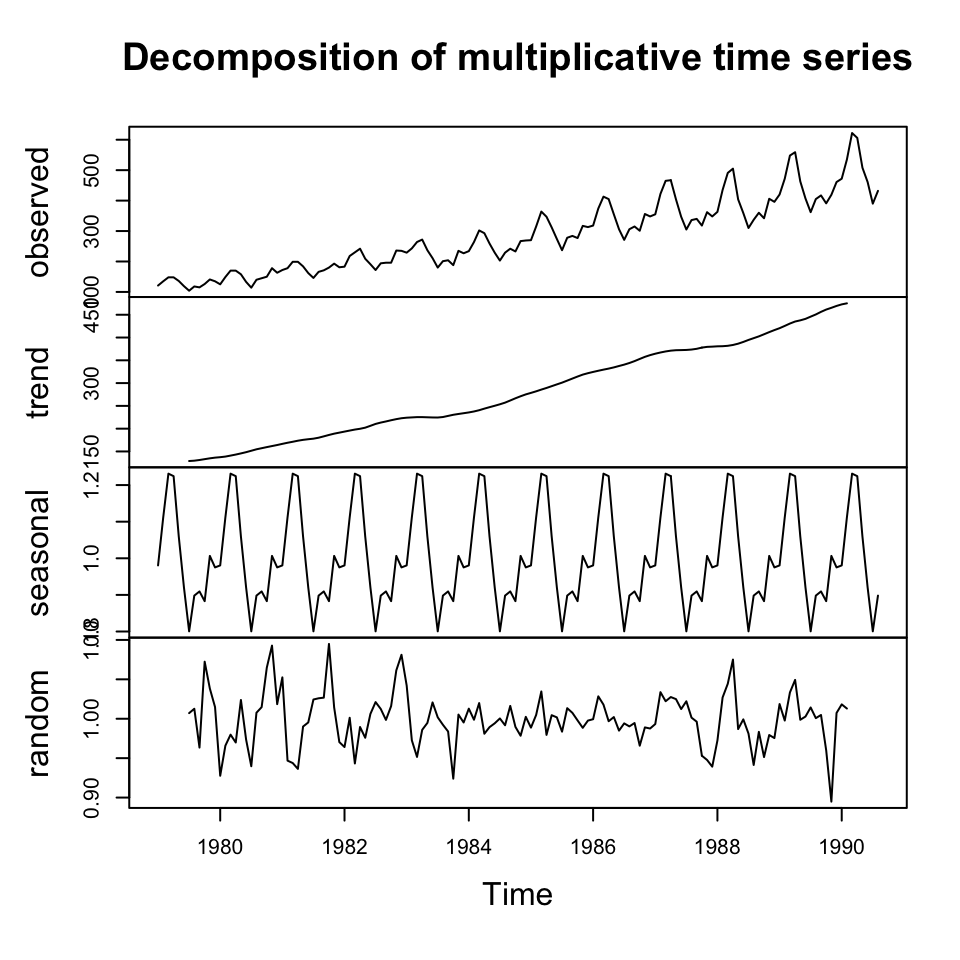
We see that the data clearly has a trend and season and the composition appear to be multiplicative as the variance is increasing
Process —-
- How to make a decomposition of a time series, using decompose()
- How to use decompose() to retrieve the different components and store these
- How to inteprete the components
- How to forecast using the components
Decomposing —-
y.decom.mult <- decompose(x = y #The ts
,type = "multiplicative") #The composition
plot(y.decom.mult)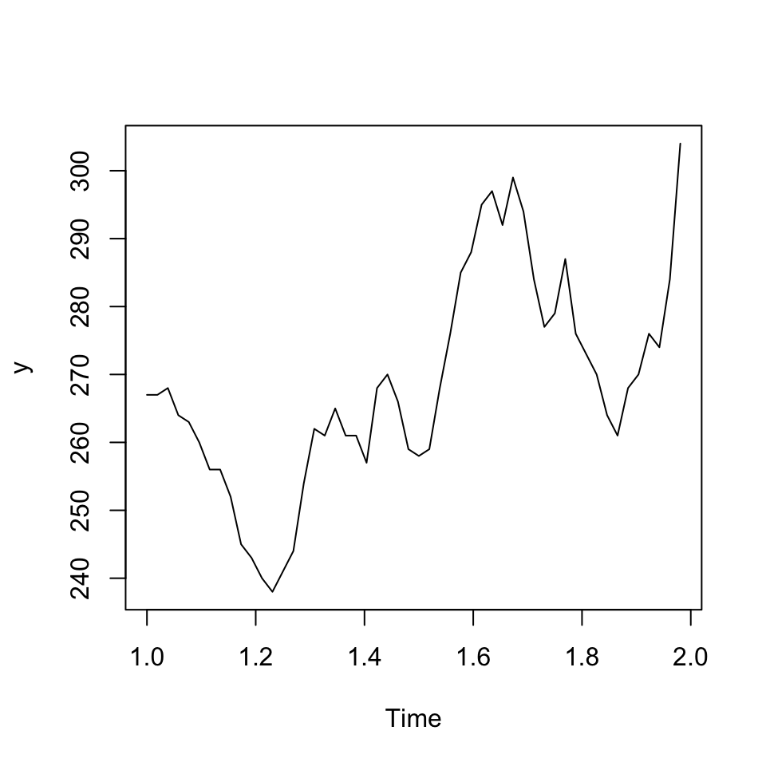
Tr <- y.decom.mult$trend
S <- y.decom.mult$seasonal
I <- y.decom.mult$randomForecasting —-
yhat <- Tr*S #Note I is not used as it is random component
{plot(y, type="l")
lines(Tr,col="green")
lines(yhat,col="red")
grid(col = "grey")}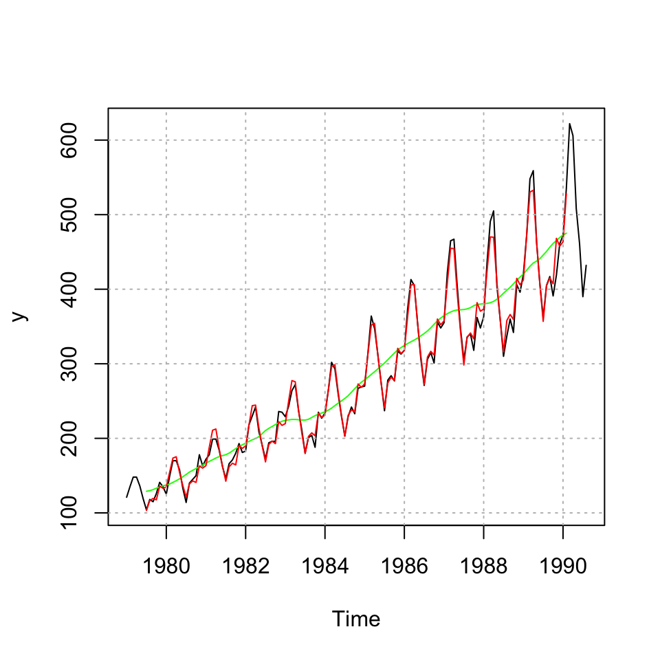
One sees that the seasons and trend is reconstructed without the –> irregular component –>
forecast.decom.mult <- forecast(object = yhat,h = 60)
plot(forecast.decom.mult)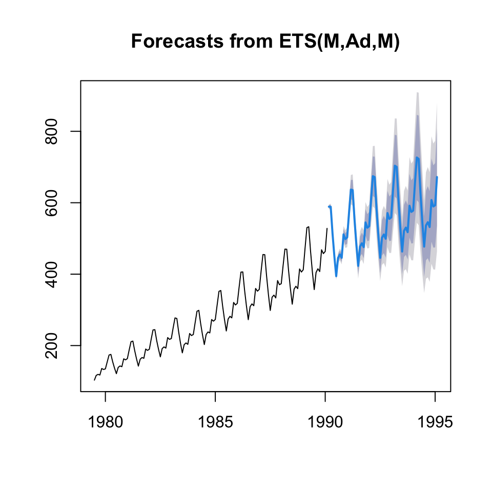
rm(list = ls())